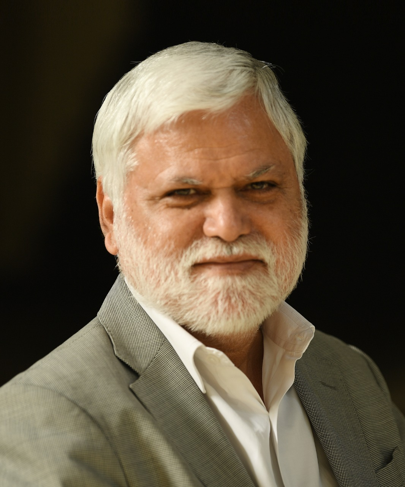
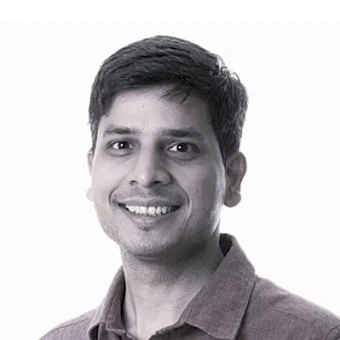
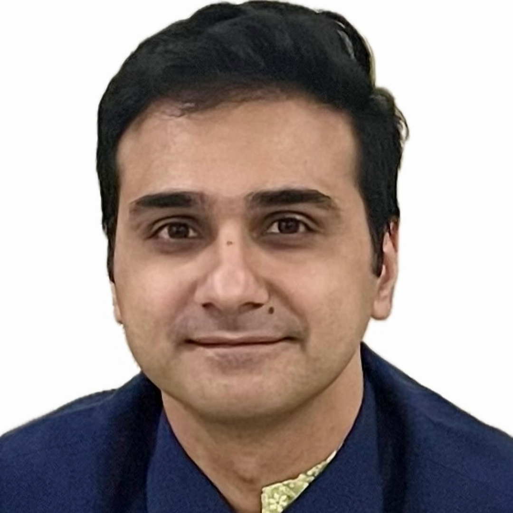
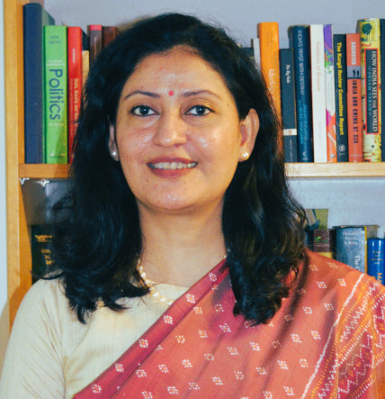
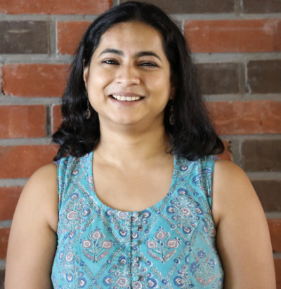
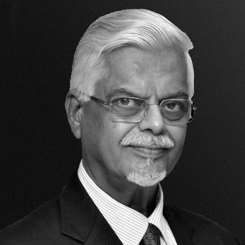

Conference at a Glance
All sessions across all four tracks, side by side — so you can plan your day and choose where to be.
Venues:
Grand Ballroom 1 — All-conference plenaries
Indian Affairs Hall — China Track
Grand Ballroom 2 — Pakistan Track
Sigma Hall — Tech Geopolitics
Grand Esquire Hall — Law Enforcement
06:30 – 07:00 PM
Registration & Networking
07:00 – 07:10 PM
Welcome Remarks
07:10 – 08:30 PM
Welcome Quiz
08:30 – 10:30 PM
Networking + Dinner
| Time | China TrackNASC📍 Indian Affairs Hall | Pakistan TrackNASP📍 Grand Ballroom 2 | Tech GeopoliticsNAST📍 Sigma Hall | Law EnforcementLEPF📍 Grand Esquire Hall |
|---|---|---|---|---|
| 09:00 – 09:20 |
09:00 – 09:20 Welcome Address 📍 Grand Ballroom 1 | |||
| 09:20 – 10:30 |
09:20 – 10:30 Plenary 1: Townhall 📍 Grand Ballroom 1 | |||
| 10:30 – 10:50 · Transition Time + Tea & Coffee Break | ||||
| 10:50 – 13:00 |
Theme 1: The Tibet Question
Paper Discussions
Roundtable
India's Approach to China in a World Marked by Great Power Rivalry
|
Theme 1: Who Runs Pakistan?
Paper Discussions
|
Theme 1: Emerging Technologies & Supply Chains
Paper Discussions
Special Session 1
China's Technology Policy and its Path Towards Technological Development
|
Hackathon: AI in Policing
Briefing + Breakout: Constructing Alternatives
|
| 13:00 – 14:15 · Lunch + Transition Time | ||||
| 14:15 – 15:30 |
14:15 – 15:30 Plenary 2: Unconference 📍 Grand Ballroom 1 | |||
| 15:30 – 15:45 · Transition Time | ||||
| 15:45 – 17:25 |
Theme 2: China Innovates, But Does It Dominate?
Paper Discussions
|
Theme 2: The Military–Jihadi Complex
Paper Discussions
|
Theme 2: Space · Theme 3: Technology & National Power
Paper Discussions
|
Hackathon (continued): AI in Policing
Breakout: Projecting Outcomes + Group Presentations
|
| 17:25 – 18:15 · Transition Time + Tea & Coffee Break | ||||
| 18:15 – 20:30 |
18:15 – 20:30 Plenary 3: The Global Hangout 📍 Grand Ballroom 1 | |||
| 20:30 – 22:00 · Dinner | ||||
| Time | China TrackNASC📍 Indian Affairs Hall | Pakistan TrackNASP📍 Grand Ballroom 2 | Tech GeopoliticsNAST📍 Sigma Hall | Law EnforcementLEPF📍 Grand Esquire Hall |
|---|---|---|---|---|
| 09:00 – 12:10 |
Panel Discussion
Talking Security — China, Pakistan & India's National Defence
Theme 3: Two-Front Conundrum
Paper Discussions
Panel Discussion
China in the Changing Geo-economic Landscape
Theme 4: Politics of the Green
Paper Discussions
|
Theme 4: Markets and Power
Paper Discussions
Theme 5: Strategic Partnerships
Paper Discussions
Special Session
India–Pakistan Low-Visibility Tracks
|
Special Session 2
India's Tech Moment: Navigating the Great Power Digital Divide
Theme 4: AI & Cybersecurity
Paper Discussions
Special Session 3
Nuclear Risks From Emerging Tech In The Contemporary Times
NAST Closing Address
|
Hackathon Final Day: AI in Policing
Briefing + Breakout: Final Presentations
Final Presentations
|
| 12:10 – 12:15 · Transition Time | ||||
| 12:15 – 13:00 |
12:15 – 13:00 Plenary 4: Closing Ceremony 📍 Grand Ballroom 1 | |||
| 13:00 – 14:30 · Lunch + Departures | ||||
Network for Advanced Study of China Fellowship (NASC)
06:30 – 07:00 PM
Registration & Networking
07:00 – 07:10 PM
Welcome Remarks
07:10 – 08:30 PM
Welcome Quiz
08:30 – 10:30 PM
Networking + Dinner
09:00 – 09:20
Welcome Address
09:20 – 10:30
Plenary 1: Townhall
10:30 – 10:45
Transition Time + Tea & Coffee Break
Paper Discussions — Theme 1: The Tibet Question
Chair: Anushka Saxena
📍 Indian Affairs Hall10:50 – 11:00
"Layers of Control": Institutionalization of Governance through Grid Management & the Erosion of Minority Rights in Tibet under Xi Jinping
11:00 – 11:05
Expert Intervention
11:05 – 11:15
Guardians of the Lineage: Political & Societal Securitisation in the Dalai Lama Succession
11:15 – 11:20
Expert Intervention
11:20 – 11:30
Buddhism as Soft Power: China's Narrative Politics & the Dalai Lama Succession across South & Southeast Asia
11:30 – 11:35
Expert Intervention
11:35 – 12:05
Q & A
Roundtable📍 Indian Affairs Hall
12:05 – 13:00
India's Approach to China in a World Marked by Great Power Rivalry
13:00 – 14:00
Lunch
14:00 – 14:15
Transition Time
14:15 – 15:30
Plenary 2: Unconference
15:30 – 15:45
Transition Time
Paper Discussions — Theme 2: China Innovates, But Does It Dominate?
Chair: Shobhankita Reddy
📍 Indian Affairs Hall15:45 – 15:55
Opening Remarks
15:57 – 16:07
Role of Politico-Administrative Ecology in the Quantum Sector: A Comparative Study of US & China
16:07 – 16:12
Expert Intervention
16:12 – 16:22
RISC V Ecosystem in China: Using Market, Government & Society Framework
16:22 – 16:27
Expert Intervention
16:27 – 17:00
Q & A
17:25 – 18:15
Transition Time + Tea & Coffee Break
18:15 – 20:30
Plenary 3: The Global Hangout
20:30 – 22:00
Dinner
Panel Discussion📍 Indian Affairs Hall
09:00 – 09:55
Talking Security: China, Pakistan & India's National Defence
Paper Discussion — Theme 3: Two-Front Conundrum
Chair: Anushka Saxena
📍 Indian Affairs Hall09:57 – 10:07
Decoding Sino-Pak Electronic and Joint Warfare Collaboration
10:07 – 10:12
Expert Intervention
10:12 – 10:20
Q & A
10:20 – 10:35
Tea & Coffee
Panel Discussion📍 Indian Affairs Hall
10:35 – 11:35
China in the Changing Geo-economic Landscape
Paper Discussion — Theme 4: Politics of the Green
Chair: Bhumika Sevkani
📍 Indian Affairs Hall11:37 – 11:47
Chinese Climate Geopolitics in the Global South: Building a green BRI
11:47 – 11:52
Expert Intervention
11:52 – 12:00
Q & A
12:00 – 12:03
NASC Conclusion
12:03 – 12:15
Transition Time
12:15 – 13:00
Plenary 4: Closing Ceremony
13:00 – 14:30
Lunch + Departures
Network for Advanced Study of Pakistan Fellowship (NASP)
06:30 – 07:00 PM
Registration & Networking
07:00 – 07:10 PM
Welcome Remarks
07:10 – 08:30 PM
Welcome Quiz
08:30 – 10:30 PM
Networking + Dinner
09:00 – 09:20
Welcome Address
09:20 – 10:30
Plenary 1: Townhall
10:30 – 10:45
Transition Time + Tea & Coffee Break
Paper Discussions — Theme 1: Who Runs Pakistan?
Chair: Aishwaria Sonavane
📍 Grand Ballroom 210:55 – 11:10
Discerning the Role of Pashtun Nonviolent Movements in Shaping Pakistan's Political Landscape
11:10 – 11:25
The Generals Meet Their Match: Barelvi Power and Pakistan's Political Crisis
11:25 – 11:40
Guardians or Gatekeepers? An Analysis of Contemporary Developments in Pakistan's Judiciary-Military Relations
11:40 – 12:05
Q & A
12:05 – 12:15
Tea Break
12:15 – 12:30
Kautilya's Arthashastra as a Diagnostic Tool for Assessing State Function, State Fragility and Societal Institutions in Pakistan
12:30 – 12:45
Assessing Pakistan as a Rentier State
12:45 – 13:00
Q & A
13:00 – 14:00
Lunch
14:00 – 14:15
Transition Time
14:15 – 15:30
Plenary 2: Unconference
15:30 – 15:45
Transition Time
Paper Discussions — Theme 2: The Military–Jihadi Complex
Chair: Adya Madhavan
📍 Grand Ballroom 215:50 – 16:05
Evolution of Militant Media Networks in Pakistan: A Comparative Perspective
16:05 – 16:20
How Islamist Militants' and Clerical Narratives Co-Opt Pakistan's Nuclear Deterrent?
16:20 – 16:35
How has Mawdudi's Interpretation of Jihad in Al Jihad fil Islam Influenced the Actions of Pakistan's Army?
16:35 – 17:00
Q & A
17:25 – 18:15
Transition Time + Tea & Coffee Break
18:15 – 20:30
Plenary 3: The Global Hangout
20:30 – 22:00
Dinner
Paper Discussions — Theme 4: Markets and Power
Chair: Sarthak Pradhan
📍 Grand Ballroom 209:05 – 09:20
Regulatory, Economic and Security Implications of Cryptocurrency Adoption in Pakistan
09:20 – 09:35
Mapping Pakistan's Digital Ecosystem: Dependence, Governance and Sovereignty
09:35 – 09:50
Hydropolitics at the Crossroads: Provincial Inequities in Water and Energy
09:50 – 10:15
Q & A
10:15 – 10:30
Tea Break
Paper Discussions — Theme 5: Strategic Partnerships
Chair: Vikrant Shinde
📍 Grand Ballroom 210:35 – 10:50
PAF–China: F-6 to J-35 and Beyond
10:50 – 11:05
The Influence of Article 40 on Pakistan's Diplomatic and Economic Relations with Muslim Majority Nations
11:05 – 11:20
The Historical Trajectory of PAF Collaboration with China and the Key Outcomes of this Partnership
11:20 – 11:45
Q & A
Special Session📍 Grand Ballroom 2
11:45 – 12:10
Special Session — India–Pakistan Low-Visibility Tracks
12:10 – 12:15
Transition Time
12:15 – 13:00
Plenary 4: Closing Ceremony
13:00 – 14:30
Lunch + Departures
Network for Advanced Study of Technology Geopolitics Fellowship (NAST)
06:30 – 07:00 PM
Registration & Networking
07:00 – 07:10 PM
Welcome Remarks
07:10 – 08:30 PM
Welcome Quiz
08:30 – 10:30 PM
Networking + Dinner
09:00 – 09:20
Welcome Address
09:20 – 10:30
Plenary 1: Townhall
10:30 – 10:45
Transition Time + Tea & Coffee Break
10:45 – 10:55
NAST Welcome Address — Setting The Stage
Paper Discussions — Theme 1: Emerging Technologies and Supply Chains
Chair: Bharath Reddy
📍 Sigma Hall10:55 – 11:15
Climate Trade Wars: Critical Supply Chain Vulnerabilities in India's Solar Energy Transition
11:15 – 11:35
Securing India's Critical Infrastructure Software Supply Chains: Policy Gaps and Governance Strategies
11:35 – 11:55
Integrating Critical Technologies into India's Vaccine Value Chain: A Policy, Economics and Diplomatic Approach for Strengthening the Ecosystem
11:55 – 12:15
From Dependencies to Dominance: Redefining India's Strategic Supply Chains in a VUCA Age of Tech Nationalism
12:15 – 12:35
Powering AI Data Centres in India: Clean Energy Pathways and Policy Frameworks
12:35 – 13:00
Special Session 1 — China's Technology Policy and its Path Towards Technological Development
13:00 – 14:00
Lunch
14:00 – 14:15
Transition Time
14:15 – 15:30
Plenary 2: Unconference
15:30 – 15:45
Transition Time
Paper Discussions — Theme 2: Space
Chair: Bharath Reddy
📍 Sigma Hall15:45 – 16:05
Navigating Rivalries: India and the Challenges of Convergence in Global Space Governance
16:05 – 16:25
Space Domain Awareness (SDA) for India: Command & Control in the NewSpace Era
Paper Discussions — Theme 3: Technology, Geopolitics and National Power
Chair: Bharath Reddy
📍 Sigma Hall16:25 – 16:45
Navigating Between Giants: Strategies for Adapting to US-China Tech Rivalry
16:45 – 17:05
Technology, Geopolitics, and National Power — Revisiting Sovereignty in an age of Innovation
17:05 – 17:25
Governing Social Media Platforms: Evaluating India's Response to Platform Geopolitics through the lens of Digital Sovereignty and National Power
17:25 – 18:15
Transition Time + Tea & Coffee Break
18:15 – 20:30
Plenary 3: The Global Hangout
20:30 – 22:00
Dinner
Special Session📍 Sigma Hall
09:00 – 10:00
Special Session 2 — India's Tech Moment: Navigating the Great Power Digital Divide
Paper Discussion — Theme 4: Artificial Intelligence and Cybersecurity
Chair: Pranay Kotasthane
📍 Sigma Hall10:00 – 10:20
GeoAI for Strategic Sovereignty: Building Skills for India's Geospatial Data Future
10:20 – 10:40
Catalysing India's AI Ascent
10:40 – 11:00
The Rise of Cyber Sovereignty: Analysing India's Strategy in Global Digital Order
11:00 – 11:20
Impact of Autonomous Systems on Urban Warfare Tactics & Civilian Protection
Special Session📍 Sigma Hall
11:20 – 11:50
Special Session 3 — Nuclear Risks From Emerging Tech In The Contemporary Times
11:50 – 12:00
NAST Closing Address
12:00 – 12:15
Transition Time
12:15 – 13:00
Plenary 4: Closing Ceremony
13:00 – 14:30
Lunch + Departures
The Law Enforcement and Policing Fellowship (LEPF)
06:30 – 07:00 PM
Registration & Networking
07:00 – 07:10 PM
Welcome Remarks
07:10 – 08:30 PM
Welcome Quiz
08:30 – 10:30 PM
Networking + Dinner
09:00 – 09:20
Welcome Address
09:20 – 10:30
Plenary 1: Townhall
10:30 – 10:45
Transition Time + Tea & Coffee Break
LEPF Hackathon: Artificial Intelligence in Policing📍 Grand Esquire Hall
10:50 – 11:10
Briefing: Constructing Alternatives
11:10 – 12:10
Breakout Session: Constructing Alternatives
12:10 – 12:40
Group Presentations
12:40 – 13:00
Briefing on Projecting Outcomes
13:00 – 14:00
Lunch
14:00 – 14:15
Transition Time
14:15 – 15:30
Plenary 2: Unconference
15:30 – 15:45
Transition Time
LEPF Hackathon: Artificial Intelligence in Policing (continued)📍 Grand Esquire Hall
15:45 – 16:45
Breakout Session: Projecting Outcomes
16:45 – 17:25
Group Presentations
17:25 – 18:15
Transition Time + Tea & Coffee Break
18:15 – 20:30
Plenary 3: The Global Hangout
20:30 – 22:00
Dinner
LEPF Hackathon: Artificial Intelligence in Policing — Final Day📍 Grand Esquire Hall
09:00 – 09:20
Briefing: Final Presentation
09:20 – 10:15
Breakout Session: Final Presentation
10:15 – 10:30
Tea & Coffee
10:30 – 12:00
Final Presentations
12:00 – 12:15
Transition Time
12:15 – 13:00
Plenary 4: Closing Ceremony
13:00 – 14:30
Lunch + Departures
Participants
Fellows, mentors and invitees across all four tracks of TNAS 2026.
NASC - China Track
Aditi Choudhary
Anamitra Banerjee
Jayshree Borah
Mallika Devi
Nisarg Jani
Noel Therattil
Rinzin Namgyal
Tabshir Shams
Tanushree Baruah
Ujjawal Upadhyay
Violina Sarmah
NASP - Pakistan Track
Anand Kumar Yadav
Bilquees Daud
Capt (Dr.) Nitin Agarwala
Dr Tejinder Hundal
Femy Francis
Grp Captain Kamran Nazeer
Harisundar Kumar
Harsh Behere
Kaushal Balaji
Khushi Sehra
Mohammad Taha Ali
Rasik Bin Altaf
Shreya Iyer
Somya Maan
Wg Cdr Amardeep Singh
NAST - Tech Geopolitics
Aaratrica Kashyap
Anandana Kapur
Arpit Tripathi
Bhargavi PBA
Chetna Anjali
Debasri Mukherjee
Jason Joseph
Kashish Parpiani
Manav Gudwani
Neeraj Gudipati
Nistha Kumari Singh
Nrusingha Narayan Dey
Pranav Satyanath
Rajesh Gopal
Shubham Shukla
Siddhant Chandra
Soumya Kanti Ghosh
Yash Khandelwal
LEPF - Law Enforcement
Amit Kumar
Avinash Pandey
Bhawni Mishra
Chandan Pal Singh
Deepti George
Dr. Vishali Sharma
Het Kumar Kaachia Patel
Hriday Chandra Sarma
Lalit Maheshwari
Moulina Bhattacharya
Neharika Gupta
Olivia Ruhil
Rajesh TV
Ravichandran Swaminathan
Shashvat Kumar
China Track
Dr. Anton Harder
China Track
Guest Teacher at the Department of International History, London School of Economics. PhD thesis on Sino-Indian relations between 1949-1962. Expert on India-China ties and East Asian history.
DK
Dr. Devendra Kumar
China Track
Associate Fellow at the Centre of Excellence for Himalayan Studies, Shiv Nadar Institution of Eminence. PhD in Political Science from the University of Hyderabad.

Katja Drinhausen
China Track
Head of Program 'Politics & Society' at MERICS. Research focuses on China's legal and governance system, digital governance, social credit systems, human rights and minority policies.

Prof. Pradeep Taneja
China Track
Senior Lecturer in Asian politics, political economy and international relations at the University of Melbourne. Deputy Associate Dean – International (India) at the Australia-India Institute.
Pakistan Track

Dr. Atul Mishra
Pakistan Track
Associate Professor and Head of Department of International Relations and Governance Studies at Shiv Nadar University. Research explores International Relations theory, Indian foreign policy, and the historical sociology of South Asia.

Dr. Aparna Pande
Pakistan Track
Research Fellow and Director of the Initiative on the Future of India and South Asia at the Hudson Institute. Leading expert on Indian foreign policy and the Indian subcontinent's strategic affairs.
Dr. Shanthie Mariet D'Souza
Pakistan Track
Founder and President of Mantraya, an independent research forum providing policy solutions for the Global South. Visiting Faculty member at the Naval War College in Goa.
Dr. Suba Chandran
Pakistan Track
Dean of the School of Conflict and Security Studies at the National Institute of Advanced Studies in Bengaluru. Research interests include Conflict Resolution, Peacebuilding, and the internal security dynamics of the Indian subcontinent.

Sumit Ganguly
Pakistan Track
Senior Fellow at the Hoover Institution and Director of its Huntington Program on Strengthening US-India Relations. Research focuses on the international and comparative politics of the contemporary Indian subcontinent, with over 20 authored or edited books.

Manish Sabharwal
Pakistan Track
Indian entrepreneur and public policy thinker, Vice Chairman of TeamLease Services. Widely recognized for his work on employment, education, labor law reform, and skill development in India.
Tech Geopolitics

Anirudh Suri
Tech Geopolitics
Venture capitalist, technology entrepreneur, and policy advisor. Managing Partner at India Internet Fund and nonresident scholar with Carnegie India.

Kailash Nadh
Tech Geopolitics
Hobbyist software developer and tinkerer. CTO at Zerodha. Volunteers at FOSS United Foundation, Rainmatter Foundation, and Indic Digital Archive Foundation (co-founder).
Dr. Karthik Nachiappan
Tech Geopolitics
Research Fellow at the Institute of South Asian Studies, National University of Singapore. Focusing on India's geoeconomics, trade, technology, climate change, and foreign policy. Author of 'Does India Negotiate?'

Dr. Manpreet Sethi
Tech Geopolitics
Distinguished Fellow at the Centre for Air Power Studies, New Delhi. Over 25 years of research and 120 publications on nuclear strategy, non-proliferation, disarmament, and nuclear governance.

Narayan Ramachandran
Tech Geopolitics
Co-Chairman of Unitus Capital and Co-Founder of InKlude Labs. Former Chairman of RBL Bank and Country Head of Morgan Stanley India. Co-founder of Takshashila Institution.

Prateek Waghre
Tech Geopolitics
Technologist and public policy researcher. Fellow with Tech Policy Press. Former Executive Director of the Internet Freedom Foundation. Researches digital rights, disinformation, and the information ecosystem.

Prof. Douglas Fuller
Tech Geopolitics
Associate Professor at Copenhagen Business School. Author of 'Paper Tigers' and 'Hidden Dragons: Firms and the Political Economy of China's Technological Development'.
Law Enforcement

Javeed Ahmad
Law Enforcement
Adjunct Distinguished Fellow at the Takshashila Institution. Retired IPS officer with 37 years of leadership in policing. Served as Director General of Police (Uttar Pradesh), Joint Director of CBI, and Director of the National Institute of Criminology and Forensic Sciences.

M. N. Reddi
Law Enforcement
Retired Indian Police Service officer of the 1984 Karnataka cadre. Served as Director General of Police & Chief of Combined Emergency Services of Karnataka. Former Commissioner of Police, Bangalore City.

Prabodh Kumar
Law Enforcement
Retired Indian Police Service officer (1988 batch, Punjab cadre). Superannuated as Director General of Police, Punjab in 2025. Previously served as Senior Superintendent of Police and led the Punjab Bureau of Investigation.

Ramphal Pawar
Law Enforcement
Former Director of the National Crime Records Bureau (NCRB). Retired Indian Police Service officer of the 1988 West Bengal cadre. Served as Joint Secretary at the National Intelligence Grid (NATGRID).

Shiv Murari Sahai
Law Enforcement
Retired Indian Police Service (IPS) officer of the 1987 batch, J&K cadre. Served as Additional Secretary in the Internal Affairs Division of the National Security Council Secretariat (PMO) and held key leadership roles including ADG Intelligence and IGP Kashmir.
Expert Advisors

Prof. Happymon Jacob
Strategic Affairs Expert
Indian strategic affairs expert specializing in India-Pakistan relations. Founder of the Council for Strategic and Defense Research, editor of India's World magazine, and Distinguished Visiting Professor at Shiv Nadar University.

Dr. Kajari Kamal
Strategic Culture Expert
Associate Professor at Takshashila Institution and distinguished scholar of India's strategic culture and grand strategy. Recognized for bridging ancient Indian political thought with modern statecraft, focusing on the Arthashastra.

Dr. Pallavi Raghavan
Historian
Historian of the modern Indian subcontinent focusing on political and diplomatic history of India and Pakistan, particularly in the early decades after Partition. Author of 'Animosity at Bay'.
Vivek Katju
Diplomat & Strategic Analyst
Former Indian diplomat and strategic affairs analyst. Served as India's Ambassador to Afghanistan and Myanmar, and held senior positions in the Ministry of External Affairs. Expert on India's foreign policy and regional security.

Dr. Jabin Jacob
International Relations Scholar
Associate Professor at the Department of International Relations and Governance Studies, Shiv Nadar Institute of Eminence, and Adjunct Research Fellow at the National Maritime Foundation. Non-resident Fellow at CSEP New Delhi.

Dr. Sanjaya Baru
Policy Expert & Journalist
Distinguished Fellow with Takshashila Institution and Founder-Trustee of Forum for National Security Studies. Former Editor of The Financial Express and Business Standard, and Media Advisor to Prime Minister Manmohan Singh.
Mr. Santosh Pai
Legal Expert
Partner with Dentons Link Legal, offering legal services in the India-China corridor since 2010. Expert in Chinese investments in India, India-China comparative law, cross-cultural negotiations, and board governance.
Dr. Amrita Jash
Geopolitics Scholar
Assistant Professor at the Department of Geopolitics and International Relations, Manipal Academy of Higher Education. PhD Co-ordinator and Co-coordinator of MAHE Centre for Indo-Pacific Studies.

Lt. Gen. S.L. Narasimhan (Retd.)
Military Expert
Infantry officer who has worked extensively on the India-China border and served as a company commander with the Indian Peace Keeping Force in Sri Lanka. Previously served on the Indian Military Training Team in Bhutan and as the defense attaché with the embassy of India in China for three years.